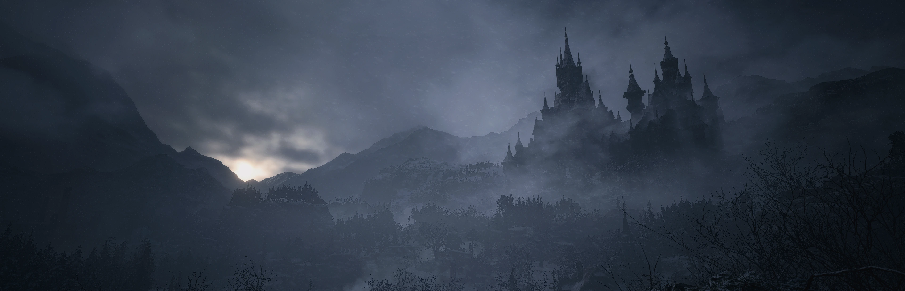
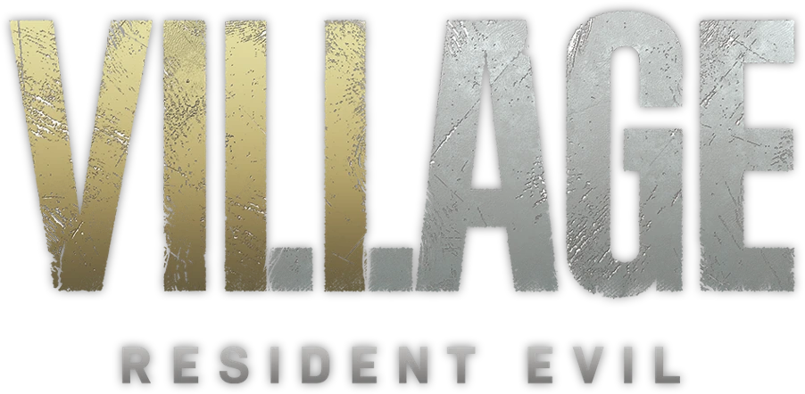

Completion
Save, back up and settings
Saved in this browser automatically. To move progress to your phone, Back up here and Restore there.


All 56 achievements for the base game and the Winters' Expansion, a nine-run plan from a blind first playthrough to Village of Shadows, The Mercenaries and Shadows of Rose, and a 100% guide with every goat, file, outhouse, window, weapon part and recipe in story order. Progress saves in this browser.